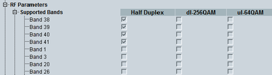
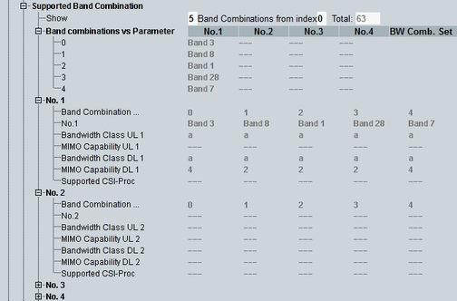
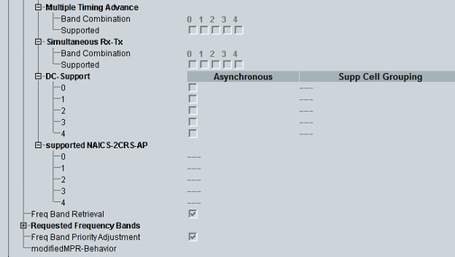

This section indicates the supported E-UTRA operating bands and other RF capabilities.



The UE supports all listed operating bands.
- "Half Duplex": The UE supports only half duplex operation in the band.
- "dl-256QAM": The UE supports DL 256-QAM in the band.
- "ul-64-QAM": The UE supports UL 64-QAM in the band.
This section lists the band combinations supported by the UE for carrier aggregation. The band combinations are numbered from 0 to n.
The row "Show" selects which of the supported combinations are displayed. You can select the total number of shown combinations and the first shown combination. In the figure, five combinations are shown, starting with combination number 0. In total, the UE has reported 63 supported combinations.
The table "Band combinations vs Parameter" contains one row per shown band combination. The columns indicate the bands. Column "BW Comb. Set" indicates which bandwidth combination sets are supported for a band combination. The leftmost bit corresponds to set 0, the next bit to set 1, and so on. "0" means that the set is not supported. "1" means that the set is supported. The sets are specified in 3GPP TS 36.101, section 5.6A.1.
Remote command:The "No. n" nodes contain one column per band combination. There is one node ("No. 1", "No. 2", ...) per band of the band combination.
For each band, the information listed in the following is given.
Supported bandwidth classes for UL and DL.
The bandwidth classes are defined in 3GPP TS 36.101, section 5.6A.
Remote command:MIMO capability for each supported bandwidth class, UL and DL. It indicates the number of supported layers for spatial multiplexing.
Example: bandwidth class = "abc", MIMO capability = "244" means 2 layers for class a, 4 layers for class b and c.
Remote command:Maximum number of supported CSI processes.
Remote command:Support of multiple timing advances, indicated per shown band combination.
Remote command:Support of simultaneous reception and transmission on different bands, indicated per shown band combination. The information element is specified by 3GPP only for TDD band combinations.
Remote command:- "Asynchronous":
Support of asynchronous DC and power control mode 2. - "Supp Cell Grouping":
Indicates for which mapping of serving cells to the first and second cell groups the UE supports asynchronous DC.
The length and meaning of the bitstring depends on the number of bands in the band combination. For details, see 3GPP TS 36.331, "supportedCellGrouping".
Bitstring from the element "supportedNAICS-2CRS-AP", per band combination.
Remote command:Indicates whether the UE supports the reception of "requestedFrequencyBands".
Remote command:Lists all frequency bands requested by E-UTRAN.
Remote command:Support of prioritization of frequency bands as requested by "freqBandIndicatorPriority-r12".
Remote command:Support of modified MPR/A-MPR behaviors. The leftmost bit refers to behavior 0, the next bit to behavior 1, and so on. 1 means supported. 0 means not supported.
Remote command: